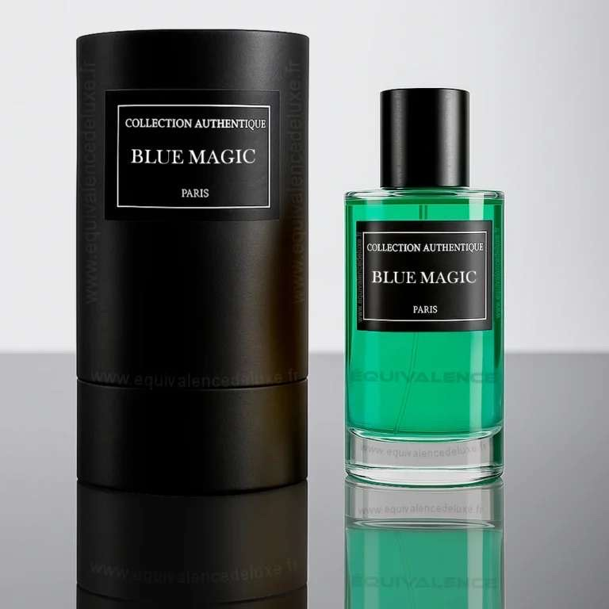
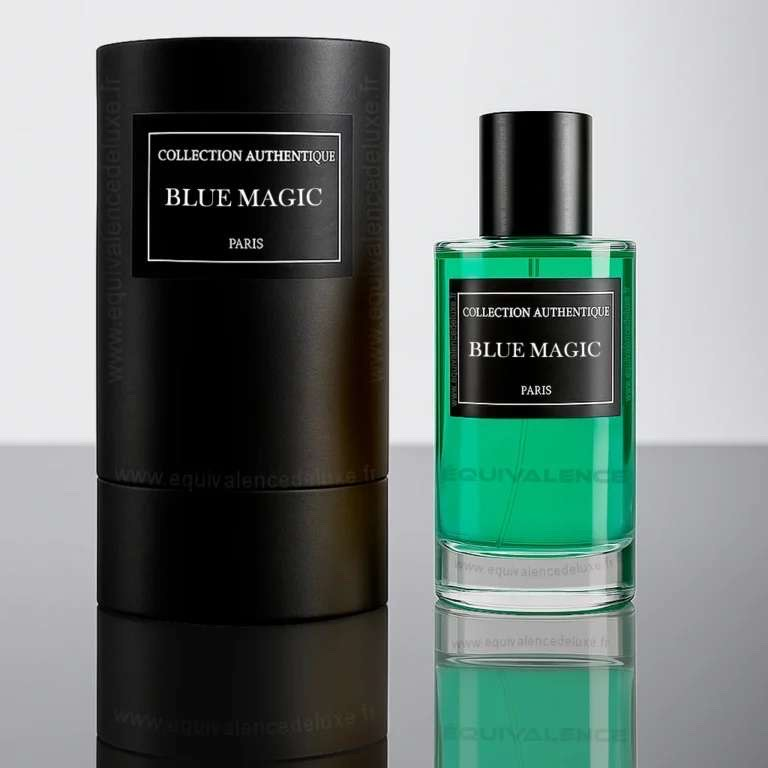

Description
Blue Magic est un parfum frais et raffiné, qui évoque les rivages marins et la brise légère d’un matin d’été. Une fragrance parfaite pour les esprits libres.
Inspiration
Inspiré par l’immensité de l’océan et la magie de l’eau, Blue Magic incarne le calme et la puissance naturelle. Idéal pour ceux qui cherchent la fraîcheur et la distinction.
Notes Olfactives
- Tête : Citron, Menthe, Accord marin
- Cœur : Lavande, Sauge
- Fond : Cèdre, Musc